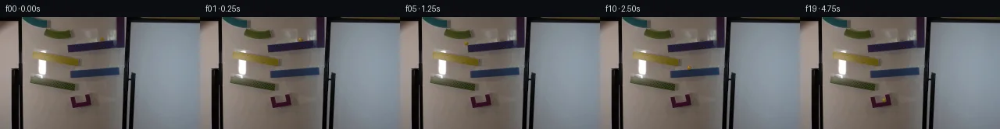
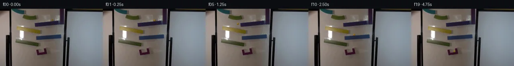
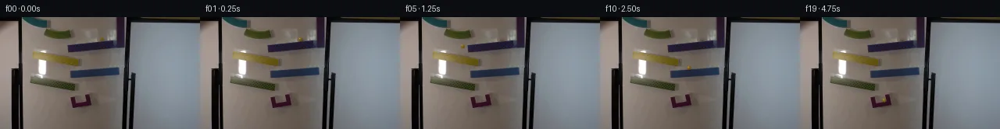
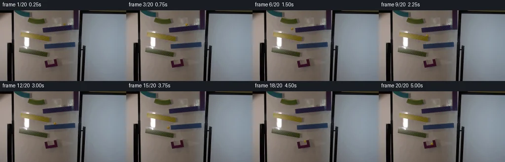
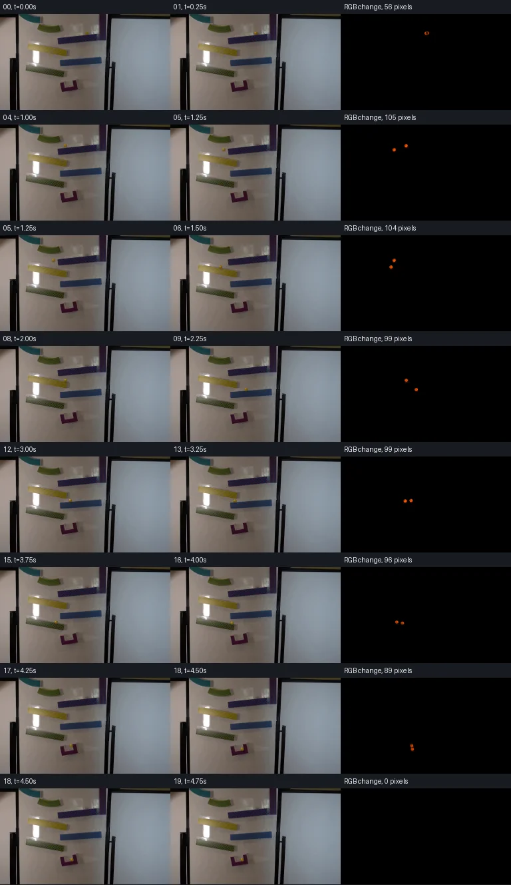

V0 · 初版
2026-11-05T11:52:01.088436+00:00 · RGB da88a00c895e
![]()
Observable Generation Trace
把最终像素视频、Harness 冻结的每轮候选、真实工具事件和 Agent 自述放在同一页。可观测证据与模型自述分开标记，避免把“模型说它检查过”误当成真实工具调用。
![首帧]()
Static locked-off single-shot with fixed frame throughout filmed with constant framerate in real-time. The scene shows a realistic scientific demonstration. The scene only contains the described setup and actions. The magnetic ramps are attached to a whiteboard for a game of marble run. The yellow glass marble is released at the top of the ramps and then slides down the magnetic ramps.
首帧显示在左侧播放器初始画面。Track 权限、隔离和 tensor 一致性来自 run manifest，而不是 METHOD.md。
默认勾选初版和最终版；可选其他版本一起同步播放。仅检查图更新的连续重复快照已合并，回退旧视频仍保留为一次修订。
Observable events
来源：events.jsonl + run manifest
此 Track 禁止读取输出图片。逐轮预览由外部 Harness 自动冻结，只用于事后审计，生成 Agent 当时看不到这些页面。
Frozen candidates
每张图来自该 round 的真实 00 / 01 / 05 / 10 / 19 帧

pixels 4a0b27b1e7c56eca · code 0b400438a3d5746e
--- previous/generate.py
+++ current/generate.py
@@ -0,0 +1,331 @@
+"""Local photographic pixel animation and constrained rolling/ballistic simulation.
+No image models, external references, network access, or external render engines.
+"""
+from pathlib import Path
+import json
+import math
+import numpy as np
+from PIL import Image, ImageDraw
+from scipy.ndimage import gaussian_filter
+from artifact_io import save
+
+ROOT = Path(__file__).resolve().parent
+TMP = ROOT / '.tmp'
+TMP.mkdir(exist_ok=True)
+SOURCE = np.asarray(Image.open(ROOT / 'first_frame.png').convert('RGB'))
+H, W = SOURCE.shape[:2]
+RADIUS = 2.45
+GRAVITY = 950.0
+DT = 1 / 2400
+EXPOSURE = 1 / 80
+
+# x limits and measured upper surfaces. y grows downward.
+RAMPS = [
+ dict(name='patterned', left=87.0, right=152.0, yl=35.0, yr=29.0),
+ dict(name='yellow', left=43.0, right=100.0, yl=44.0, yr=54.1),
+ dict(name='blue', left=90.5, right=153.0, yl=69.1, yr=64.6),
+ dict(name='green', left=40.0, right=96.0, yl=77.4, yr=86.7),
+]
+for ramp in RAMPS:
+ ramp['m'] = (ramp['yr'] - ramp['yl']) / (ramp['right'] - ramp['left'])
+ ramp['b'] = ramp['yl'] - ramp['m'] * ramp['left']
+ ramp['norm'] = math.hypot(1, ramp['m'])
+
+
+def support_y(x, ramp):
+ return ramp['m'] * x + ramp['b'] - RADIUS * ramp['norm']
+
+
+def simulate():
+ """Continuous speed on a ramp, free fall in each gap, dissipative impacts."""
+ steps = round(5.0 / DT) + 1
+ states = np.empty((steps, 5), dtype=float) # x, y, vx, vy, contact id
+ events = []
+ ramp_id, mode = 0, 'ramp'
+ x, y, u = 130.0, support_y(130.0, RAMPS[0]), 0.0
+ vx = vy = 0.0
+ catch_rest = False
+ for k in range(steps):
+ t = k * DT
+ states[k] = x, y, vx, vy, ramp_id if mode == 'ramp' else (4 if mode == 'catch' else -1)
+ if k == steps - 1:
+ break
+ if mode == 'ramp':
+ ramp = RAMPS[ramp_id]
+ downhill = np.sign(ramp['m'])
+ resistance = 0.004 * GRAVITY
+ direction = np.sign(u) if abs(u) > 0.02 else downhill
+ acceleration = (5 / 7) * GRAVITY * ramp['m'] / ramp['norm'] - direction * resistance
+ u += acceleration * DT
+ vx, vy = u / ramp['norm'], u * ramp['m'] / ramp['norm']
+ x += vx * DT
+ y = support_y(x, ramp)
+ # Center is offset from its point of tangency in the surface normal.
+ contact_x = x - RADIUS * ramp['m'] / ramp['norm']
+ if contact_x < ramp['left'] or contact_x > ramp['right']:
+ events.append(dict(time=t+DT, event='exit '+ramp['name'], x=x, y=y, vx=vx, vy=vy))
+ ramp_id += 1
+ mode = 'flight'
+ elif mode == 'flight':
+ old_x, old_y = x, y
+ x += vx * DT
+ y += vy * DT + 0.5 * GRAVITY * DT * DT
+ vy += GRAVITY * DT
+ if ramp_id < 4:
+ ramp = RAMPS[ramp_id]
+ surface = support_y(x, ramp)
+ contact_x = x - RADIUS * ramp['m'] / ramp['norm']
+ if ramp['left'] <= contact_x <= ramp['right'] and y >= surface and old_y < support_y(old_x, ramp):
+ # Channel impact loses most tangential speed; remaining uphill
+ # speed reverses continuously under the next ramp's gravity.
+ before = [vx, vy]
+ u = 0.20 * (vx + ramp['m'] * vy) / ramp['norm']
+ y = surface
+ vx, vy = u / ramp['norm'], u * ramp['m'] / ramp['norm']
+ mode = 'ramp'
+ events.append(dict(time=t+DT, event='contact '+ramp['name'], x=x, y=y, velocity_before=before, velocity_after=[vx,vy]))
+ else:
… diff truncated; 244 more lines …
pixels 82c71a1859987634 · code 9befefeac711ae0d
--- previous/generate.py
+++ current/generate.py
@@ -6,7 +6,6 @@
import math
import numpy as np
from PIL import Image, ImageDraw
-from scipy.ndimage import gaussian_filter
from artifact_io import save
ROOT = Path(__file__).resolve().parent
@@ -15,7 +14,7 @@
SOURCE = np.asarray(Image.open(ROOT / 'first_frame.png').convert('RGB'))
H, W = SOURCE.shape[:2]
RADIUS = 2.45
-GRAVITY = 950.0
+GRAVITY = 1050.0
DT = 1 / 2400
EXPOSURE = 1 / 80
@@ -311,7 +310,7 @@
- inspection.png is the required sampled contact sheet. transition_check.png contains consecutive frame pairs and amplified RGB difference maps. These files were generated for review; they were not visually reviewed by the agent.
- index.html is the standalone player created by the supplied artifact_io.py, using the original packed frame and exact packed frame deltas. It preserves the fixed 250 ms frame interval.
-The reproducible entry point is `python generate.py`. Numeric details are written to `.tmp/validation.json`. Only NumPy, Pillow, SciPy pixel/numeric operations, and the supplied output helper are used.
+The reproducible entry point is `python generate.py`. Numeric details are written to `.tmp/validation.json`. Only NumPy, Pillow pixel/numeric operations, and the supplied output helper are used.
'''
(ROOT/'METHOD.md').write_text(text)
pixels 82c71a1859987634 · code 9befefeac711ae0d
No generate.py text change in this frozen round.

pixels d990c59819f4a3f5 · code c5ba6b76364b83da
--- previous/generate.py
+++ current/generate.py
@@ -3,6 +3,9 @@
"""
from pathlib import Path
import json
+import base64
+import re
+import shutil
import math
import numpy as np
from PIL import Image, ImageDraw
@@ -20,7 +23,7 @@
# x limits and measured upper surfaces. y grows downward.
RAMPS = [
- dict(name='patterned', left=87.0, right=152.0, yl=35.0, yr=29.0),
+ dict(name='patterned', left=87.0, right=152.0, yl=34.5, yr=28.5),
dict(name='yellow', left=43.0, right=100.0, yl=44.0, yr=54.1),
dict(name='blue', left=90.5, right=153.0, yl=69.1, yr=64.6),
dict(name='green', left=40.0, right=96.0, yl=77.4, yr=86.7),
@@ -250,6 +253,24 @@
decoded = np.stack([(p>>16)&255,(p>>8)&255,p&255],axis=-1).astype(np.uint8)
png = np.asarray(Image.open(ROOT/'frames'/f'{i:02d}.png').convert('RGB'))
assert np.array_equal(png,decoded) and np.array_equal(png,frames[i])
+ assert (ROOT/'frames'/'00.png').read_bytes() == (ROOT/'first_frame.png').read_bytes()
+ # Reconstruct the standalone HTML player's entire embedded sequence locally.
+ html = (ROOT/'index.html').read_text()
+ data = json.loads(re.search(r'const DATA=(.*?);\nfunction unpack',html,re.S).group(1))
+ player = np.frombuffer(base64.b64decode(data['first']),dtype='<u4').copy()
+ assert np.array_equal(player,packed[:,:,0].ravel())
+ assert len(data['deltas']) == 19 and '},250)' in html
+ for i,encoded in enumerate(data['deltas'],1):
+ patch = np.frombuffer(base64.b64decode(encoded),dtype='<u4')
+ j = 0
+ while j < len(patch):
+ start,count = map(int,patch[j:j+2]); j += 2
+ player[start:start+count] = patch[j:j+count]; j += count
+ assert np.array_equal(player,packed[:,:,i].ravel())
+ for name in ['inspection.png','transition_check.png']:
+ with Image.open(ROOT/name) as image:
+ assert image.mode == 'RGB'
+ image.verify()
sample = [state_at(i/4) for i in range(20)]
assert np.isfinite(STATES).all()
assert all(35 < s[0] < 154 and 20 < s[1] < 114 for s in sample)
@@ -271,7 +292,7 @@
assert any(e['event']=='settled' for e in EVENTS)
assert np.array_equal(frames[-1],frames[-2])
transitions = [int(np.any(frames[i]!=frames[i-1],axis=2).sum()) for i in range(1,20)]
- report = dict(frame_shape=list(frames.shape),tensor_shape=list(packed.shape),tensor_dtype=str(packed.dtype),fps=4,duration_seconds=5,frame00_exact=True,png_tensor_matches=20,background_violations=max(violations),max_ramp_contact_error_pixels=float(max(support_error)),source_removal_pixels=int(REMOVAL_MASK.sum()),changed_pixels_from_source=changed_counts,consecutive_changed_pixels=transitions,events=EVENTS,samples=[dict(frame=i,time=i/4,x=float(s[0]),y=float(s[1]),vx=float(s[2]),vy=float(s[3]),contact=int(round(s[4]))) for i,s in enumerate(sample)])
+ report = dict(frame_shape=list(frames.shape),tensor_shape=list(packed.shape),tensor_dtype=str(packed.dtype),fps=4,duration_seconds=5,frame00_exact=True,frame00_file_exact=True,png_tensor_matches=20,player_tensor_matches=20,background_violations=max(violations),max_ramp_contact_error_pixels=float(max(support_error)),source_removal_pixels=int(REMOVAL_MASK.sum()),changed_pixels_from_source=changed_counts,consecutive_changed_pixels=transitions,events=EVENTS,samples=[dict(frame=i,time=i/4,x=float(s[0]),y=float(s[1]),vx=float(s[2]),vy=float(s[3]),contact=int(round(s[4]))) for i,s in enumerate(sample)])
(TMP/'validation.json').write_text(json.dumps(report,indent=2))
return report
@@ -284,7 +305,7 @@
This is a local pixel-based continuation of the provided photograph. The first frame was observed only in the user-provided attachment. No generated image was opened in an image Read/View tool; later inspection was exclusively local Python and numerical checks. No network, reference images, masks supplied externally, neural models, subagents, or external rendering engines were used.
-The camera, board, frames, ramps, and lighting are held fixed by retaining the original photographic background. Frame 00 is the original RGB image, pixel for pixel. For frames 01–19, a {report['source_removal_pixels']}-pixel mask around the original yellow marble is filled by 700 iterations of local harmonic interpolation from adjacent original pixels. The mask is computed within generate.py from source coordinates and amber RGB differences. It does not alter the patterned ramp's main face.
+The camera, board, frames, ramps, and lighting are held fixed by retaining the original photographic background. Frame 00 is copied from the original PNG file, byte for byte as well as pixel for pixel. For frames 01–19, a {report['source_removal_pixels']}-pixel mask around the original yellow marble is filled by 700 iterations of local harmonic interpolation from adjacent original pixels. The mask is computed within generate.py from source coordinates and amber RGB differences. It does not alter the patterned ramp's main face.
A radius-{RADIUS} pixel amber glass sphere is drawn over this background. A 4 by 4 subpixel coverage calculation uses analytic sphere normals, dim amber material colors calibrated to the original bead, slight background transmission, an upper-left glint, a lower refracted highlight, and a rotating internal color variation. Gaussian shadows are confined to the immediate sphere neighborhood. Five temporal samples over a {EXPOSURE*1000:.1f} ms exposure provide restrained motion blur. All final scene frames are unannotated RGB at 256 by 144.
@@ -301,9 +322,9 @@
## Numeric verification
- Exactly 20 uint8 RGB frames, each 256 × 144, sampled at 4 fps for a 5-second playback. Frame i is t=i/4, with frame 19 held for the final 0.25-second playback interval.
-- Frame 00 exactly equals first_frame.png after RGB decoding.
+- Frame 00 exactly equals first_frame.png both as a PNG file and after RGB decoding.
- pixels.npz contains the pixels key with shape (144,256,20), dtype uint32, and values packed as 0xRRGGBB.
-- All 20 saved PNGs were decoded locally and verified byte-for-byte against both the frames array and the packed tensor.
+- All 20 saved PNGs were decoded locally and verified byte-for-byte against both the frames array and the packed tensor. All 20 player frames were separately reconstructed from the HTML base64 delta packets and matched the tensor exactly. Both diagnostic sheets pass PNG integrity checks.
- All trajectory entries are finite and inside the scene; maximum ramp-contact residual is {report['max_ramp_contact_error_pixels']:.3g} pixels.
- Zero changed background pixels outside the source marble removal mask and a 9-pixel neighborhood of the current marble.
- Final two frames are identical after settling. Source-relative changed pixel counts range from {min(report['changed_pixels_from_source'][1:])} to {max(report['changed_pixels_from_source'])} pixels for frames 01–19.
@@ -321,6 +342,7 @@
print(f"{e['time']:.3f} {e['event']}: ({e['x']:.2f},{e['y']:.2f})")
frames = render_frames()
save(frames,ROOT)
+ shutil.copyfile(ROOT/'first_frame.png',ROOT/'frames'/'00.png')
transition_sheet(frames)
report = validate(frames)
write_method(report)pixels d990c59819f4a3f5 · code c5ba6b76364b83da
No generate.py text change in this frozen round.
Final visual checks
Harness 保存的最终产物


Agent claims
以下文字由生成 Agent 撰写，不等同于工具证据
The supplied first frame was observed in the user attachment. Subsequent inspection will use local Python and numeric output only; no image reading/viewing tools will be used. The image is RGB, 256 by 144 pixels. Coordinates below use the upper-left origin, x rightward and y downward.
The fixed scene is a whiteboard at an oblique angle, with black vertical framing near x=24 and x=159–173. The right half is a plain pale board. Several short colored magnetic ramps are mounted on the left. Partly cropped teal and green pieces at the top are stationary. The visible yellow/amber glass marble is centered approximately at (130,28), radius 2.5 pixels. It rests just above the upper patterned ramp, rather than on the cropped top-left pieces. Numeric RGB sampling locates its yellow region at x=127–133, y=26–30.
Measured usable ramp upper surfaces (not their lower colored faces):
The marble will accelerate from rest down the patterned ramp, fall onto the yellow ramp, lose tangential speed at contact, reverse into its downhill direction, fall onto the blue ramp, repeat the contact and direction change, then descend the green ramp and drop into the purple catch. Impact losses and rolling resistance represent the magnetic channel contact. Gravity acts during gaps. No hands, new apparatus, camera movement, cuts, or scene changes are introduced. The initial marble is removed only in its small original footprint for frames 01 onward. The sphere is rendered with subpixel antialiasing, amber absorption, a small glass glint, and local contact shadow. Static photographic pixels otherwise remain fixed.
This is the pre-generation event plan. Times are t=i/4 seconds; physical integration will determine the precise positions and may shift a transition by one sample.
| Frame | Time | Intended event |
|---|---|---|
| 00 | 0.00 | Original frame copied exactly; marble at (130,28). |
| 01 | 0.25 | Starts rolling left on patterned ramp. |
| 02 | 0.50 | Accelerates left along upper ramp. |
| 03 | 0.75 | Passes middle-left of upper ramp. |
| 04 | 1.00 | Approaches upper ramp's left end. |
| 05 | 1.25 | Leaves patterned ramp and lands on yellow ramp. |
| 06 | 1.50 | Contact slows/reverses the marble on yellow ramp. |
| 07 | 1.75 | Accelerates right down yellow ramp. |
| 08 | 2.00 | Near yellow ramp's right end. |
| 09 | 2.25 | Drops to blue ramp; dissipative contact. |
| 10 | 2.50 | Starts descending blue ramp leftward. |
| 11 | 2.75 | Moves left along blue ramp. |
| 12 | 3.00 | Approaches blue ramp's left edge. |
| 13 | 3.25 | Drops toward green ramp. |
| 14 | 3.50 | Contact on green ramp; starts moving right. |
| 15 | 3.75 | Rolls toward green ramp's right edge. |
| 16 | 4.00 | Falls from green ramp into purple catch. |
| 17 | 4.25 | Small dissipative bounce against catch floor/lip. |
| 18 | 4.50 | Finishes settling in catch. |
| 19 | 4.75 | Marble remains in catch; apparatus remains stationary. |
Deliverables: generate.py; pixels.npz with uint32 packed 0xRRGGBB, shape (144,256,20); frames/00.png through 19.png; inspection.png; transition_check.png; index.html; METHOD.md. Numeric validation will verify exact frame 00, equality of all PNGs to the packed tensor, finite trajectories, valid colors/dimensions, movement localized to the marble, and coherent ramp contacts.
After the first numeric render, gravity was adjusted from 950 to 1050 pixel/s² so that the catch settles before frame 18. The patterned ramp's usable top edge was calibrated to half a pixel above the first saturated edge row, giving endpoints (87,34.5) and (152,28.5), and the initial simulated bead center (130,28.07), matching the observed amber footprint. The actual yellow, blue, and green contacts occur at 1.321, 2.177, and 3.555 seconds. Frame 16 is still on the green ramp, frame 17 is falling inside the catch opening, and frames 18–19 are at rest. These replace the approximate transition times in the pre-generation event plan. All detailed final positions and validation results are in METHOD.md and .tmp/validation.json.
This is a local pixel-based continuation of the provided photograph. The first frame was observed only in the user-provided attachment. No generated image was opened in an image Read/View tool; later inspection was exclusively local Python and numerical checks. No network, reference images, masks supplied externally, neural models, subagents, or external rendering engines were used.
The camera, board, frames, ramps, and lighting are held fixed by retaining the original photographic background. Frame 00 is copied from the original PNG file, byte for byte as well as pixel for pixel. For frames 01–19, a 31-pixel mask around the original yellow marble is filled by 700 iterations of local harmonic interpolation from adjacent original pixels. The mask is computed within generate.py from source coordinates and amber RGB differences. It does not alter the patterned ramp's main face.
A radius-2.45 pixel amber glass sphere is drawn over this background. A 4 by 4 subpixel coverage calculation uses analytic sphere normals, dim amber material colors calibrated to the original bead, slight background transmission, an upper-left glint, a lower refracted highlight, and a rotating internal color variation. Gaussian shadows are confined to the immediate sphere neighborhood. Five temporal samples over a 12.5 ms exposure provide restrained motion blur. All final scene frames are unannotated RGB at 256 by 144.
Motion uses a deterministic 1/2400-second integration. The four measured ramp surfaces constrain the sphere's tangent position; ramp speed follows the 5/7 solid-sphere rolling factor, projected downward gravity (1050 pixel/s²), and rolling resistance of 0.004 times gravity. At the ledges the marble keeps its velocity and follows ballistic free fall. Contact with the next channel retains 20% of tangential impact speed; any residual uphill movement slows and reverses continuously under gravity. This effective damping approximates channel collision and friction; it is an artistic physical approximation, not a recovered exact material measurement. The catch lip and floor have small restitution and strong friction, and the marble rests after 4.343 seconds. The pre-generation plan in OBSERVATION.md was approximate; the actual fixed-time samples are below.
| Frame | Time (s) | Center x | Center y | Contact |
|---|---|---|---|---|
| 00 | 0.00 | 130.00 | 28.07 | patterned |
| 01 | 0.25 | 127.98 | 28.26 | patterned |
| 02 | 0.50 | 121.94 | 28.81 | patterned |
| 03 | 0.75 | 111.86 | 29.74 | patterned |
| 04 | 1.00 | 97.75 | 31.05 | patterned |
| 05 | 1.25 | 79.90 | 37.15 | flight |
| 06 | 1.50 | 75.19 | 47.22 | yellow |
| 07 | 1.75 | 82.72 | 48.55 | yellow |
| 08 | 2.00 | 98.05 | 51.27 | yellow |
| 09 | 2.25 | 113.11 | 65.02 | blue |
| 10 | 2.50 | 113.69 | 64.97 | blue |
| 11 | 2.75 | 111.05 | 65.16 | blue |
| 12 | 3.00 | 105.33 | 65.58 | blue |
| 13 | 3.25 | 96.50 | 66.21 | blue |
| 14 | 3.50 | 84.89 | 73.64 | flight |
| 15 | 3.75 | 83.78 | 82.19 | green |
| 16 | 4.00 | 92.30 | 83.60 | green |
| 17 | 4.25 | 106.38 | 101.56 | flight |
| 18 | 4.50 | 107.33 | 106.75 | catch |
| 19 | 4.75 | 107.33 | 106.75 | catch |
The continuous simulation's transitions:
The reproducible entry point is python generate.py. Numeric details are written to .tmp/validation.json. Only NumPy, Pillow pixel/numeric operations, and the supplied output helper are used.